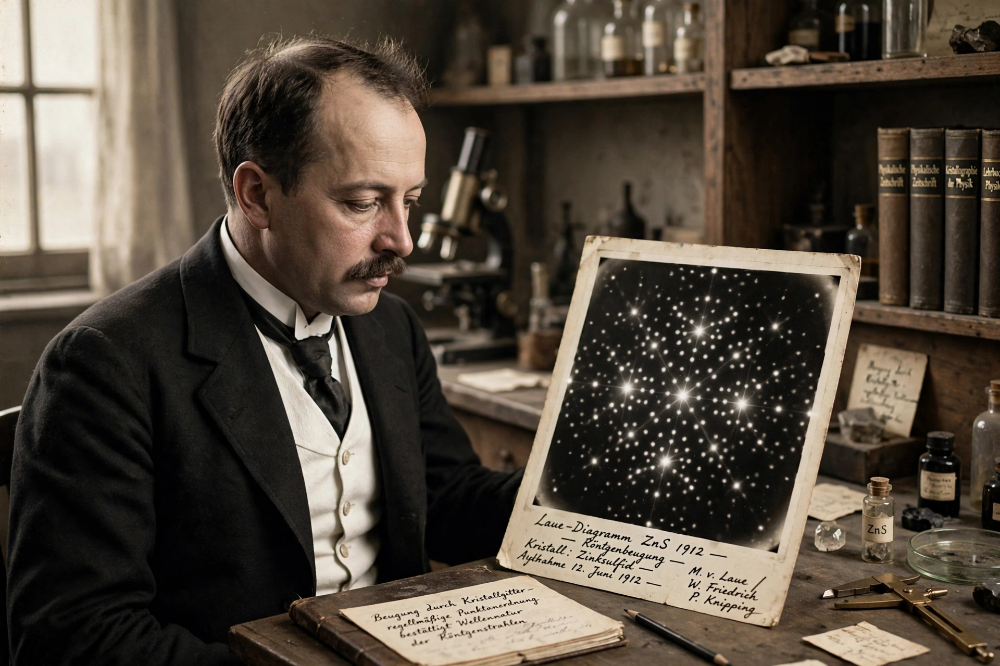

| Born | October 9, 1879 Pfaffendorf, German Empire |
|---|---|
| Died | April 24, 1960 (aged 80) West Berlin, West Germany |
| Alma mater | University of Berlin |
| Known for | Discovery of X-ray diffraction by crystals; Laue equations |
| Awards | Nobel Prize in Physics (1914); Max Planck Medal (1932) |
| Fields | Physics |
| Doctoral advisor | Max Planck |
Max Theodor Felix von Laue (October 9, 1879 – April 24, 1960) was a German physicist who initiated the field of X-ray crystallography. In 1912 he proposed that crystals, with their regular atomic lattices, should diffract X-rays as a three-dimensional grating; his colleagues Walter Friedrich and Paul Knipping performed the experiment, producing the first X-ray diffraction patterns. The discovery simultaneously proved the wave nature of X-rays and the periodic atomic structure of crystals, and won Laue the 1914 Nobel Prize in Physics.
Laue derived the Laue equations describing the diffraction conditions, later shown equivalent to Bragg's law. His work directly enabled the Braggs' determination of crystal structures and much of twentieth-century structural science. Laue also contributed to relativity (early work on the Fizeau experiment and twin paradox), superconductivity, and optics.
During the Nazi era Laue was one of the few prominent German physicists who openly defended Einstein and "Jewish physics" against the Deutsche Physik movement, and he quietly assisted persecuted colleagues. After the Second World War he helped rebuild German science as director of the Fritz Haber Institute in Berlin.
Categories: 1879 births | 1960 deaths | German physicists | Nobel laureates in Physics